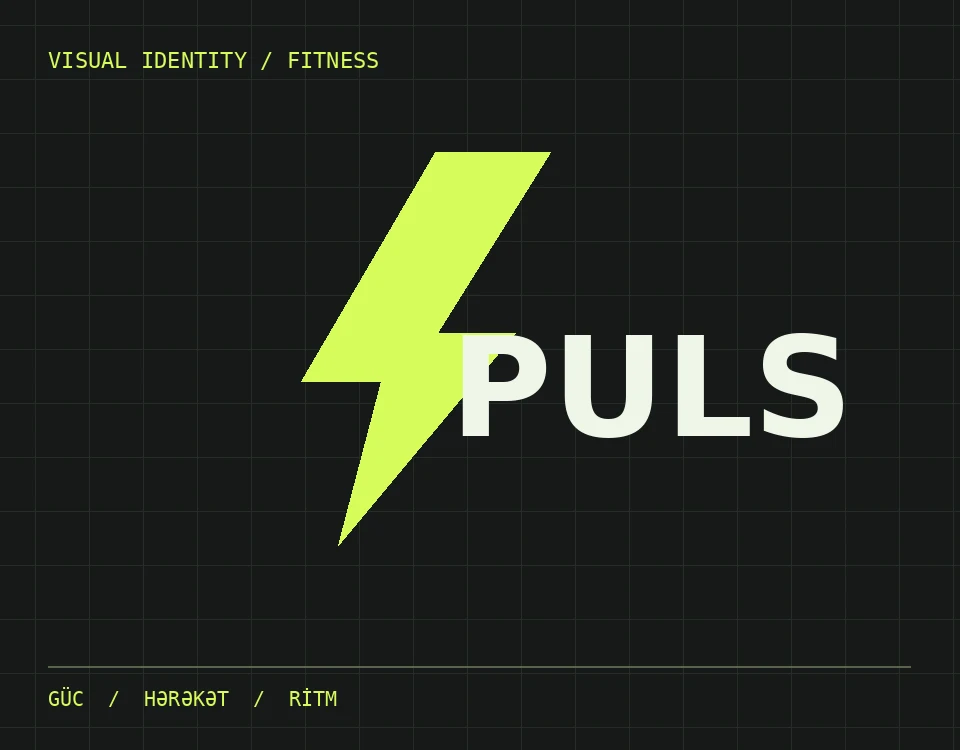

Nihad Şəfiyev Bakı
Dizaynportfoliosu
Vizual kimlik, reklam və çap dizaynı. Hər layihədə fikrin nədən başladığına və müxtəlif səthlərdə necə işlədiyinə bax.
İşlərə bax
PULS Fitness Vizual kimlik konseptiSeçilmiş layihələr
İş üsulum
Fikirdən tətbiqə.
- Məqsədi müəyyənləşdirirəm
Auditoriyanı, materialın harada görünəcəyini və ilk baxışda nə deməli olduğunu aydınlaşdırıram.
- Vizual istiqaməti qururam
Tipoqrafiya, rəng və kompozisiya birlikdə işləyənə qədər seçilmiş istiqaməti təkmilləşdirirəm.
- Tətbiqi yoxlayıram
Dizaynı telefon, çap və ya reklam səthi üçün yoxlayıb razılaşdırılmış ölçülərdə təhvil verirəm.
Növbəti layihəniz nədir?
Kampaniya, vizual kimlik və ya davamlı dizayn dəstəyi haqqında danışaq.
Əməkdaşlığa bax